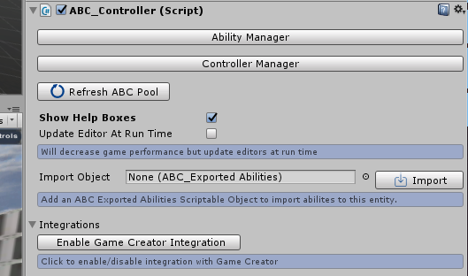

Game Creator Integration
Overview
ABC includes features which allows you to seamlessly integrate with Catsoft Studios Game Creator Asset. This section details all the Game Creator (GC) functionality that ABC can use and instructions on how to configure the integration. Currently ABC intergates with the following Game Creator functionality:
- Activating Abilities using GC Action
- Triggering Actions/Conditions from Ability Collision (Ability Collision as a new GC Trigger)
- Using/Adjusting GC Health/Mana
- Using GC Stats to enhance ABC Effects
- Modifying GC Stats/Attributes
- Adding/Removing Status Effects
Enabling Game Creator
By default Game Creator integration will not be enabled in ABC. To Enable Game Creator please follow the below steps:
- 1. Add ABC_Controller or ABC_StateManager component to any object and in the inspector click the "Integrations" toggle. Once toggled
- 2. In the inspector click the "Integrations" toggle
- 3. Once toggled, click the "Enable Game Creator Integration" button
- 4. To disable Game Creator integration simply click the button again which will now display "Disable Game Creator Integration"
PLEASE NOTE: ABC will error if Game Creator integration has been enabled but you have not imported Game Creator yet. Please ensure Game Creator has been installed before clicking this button

Activating Abilities Using GC Action
GC Action has been created which allows for you to activate abilities. The Activate Ability action can be found when adding new GC actions under the "ABC Integration" section
When configuring the action you are able to configure 3 settings:
-
Target
-
Who will activate the ability
-
Ability Ref Type
-
The ability reference type, either "Ability Name" or "Ability ID" can be selected
-
Ability Name
-
If reference type is set to "Ability Name" then a text box will appear allowing you to enter the name of the ability to activate
-
Ability ID
-
If reference type is set to "Ability ID" then a number box will appear allowing you to enter the ID of the ability you want to activate

Ability Collision GC Trigger
A Ability Collision Trigger has been added to GC. This allows you to trigger GC actions or GC conditions when an ABC ability collides with an object. The "On Collision With ABC Ability" trigger can be found when changing the GC trigger under the "ABC Integration" section
When configuring the trigger you are able to configure 3 settings:
-
Ability Ref Type
-
Determines the reference type of the ability, depending on the choice selected you can configure for the trigger to only activate when specific or all abilities collide.
There is currently 4 reference types: "Ability Name", "Ability ID", "Effect", "All"
-
Ability ID
-
If "Ability ID" is selected as the reference type then only Abilities with the matching ID placed in this box will activate the trigger on collision
-
Ability Name
-
If "Ability Name" is selected as the reference type then only Abilities with the matching name placed in this box will activate the trigger on collision
-
Effect
-
If reference type is set to "Effect" then any Abilities that collide which have the "GC Ability Collision Trigger" effect will activate the trigger. This can be further filtered down
by adding a value in the "Effect Misc Value" box. If the value is empty then all Abilities with the effect will activate the trigger, else if a value is present then only Abilities with the effect
and the same matching "Misc Property" value configured in the effect settings in ABC will activate the trigger. More
information on the effect can be found by clicking the following link: GC Ability Collision Trigger Effect
-
All
-
All ABC Abilities will activate the trigger on collision

GC Health & Mana
(Requires GC Stats Module) Functionality exists so that you can choose to use GC Health & Mana Attributes instead of ABC own Health and Mana system. If configured then ABC will instead retrieve and adjust the GC Health and/or Mana instead of it's own Health and Mana. This means that both ABC and GC functionality can be used. For example you may wish to use the ABC functionality to regen GC health/mana per second or you can choose to not use this and just use GC functionality.
If ABC is set to use GC health/mana then all ABC functionality relating to health/mana will use GC Health/Mana instead. This includes adjusting health through an Ability Effect (i.e Adjust Health effect will now change GC health) or adding a mana cost on abilities (which will now use GC mana)
To configure which system to use change the "Integration Type" setting which can be found in both the Health & Mana sections. Simply click which system to use in the dropdown, either "ABC" or "Game Creator". If Game Creator is selected then an additional ID setting will appear allowing you to insert the ID of the health and mana attribute in Game Creator. This tells ABC which GC attribute represents health and mana.

Using GC Stats To Modify Effects
ABC has functionality which allows for stats to affect the potency/power/force/value etc behind an effect. For example with an “AdjustHealth” effect the originators attack stat may modify the potency reducing more health (doing more damage) however the effect may also have it’s potency modified again depending on the targets defence so it doesn’t reduce as much as it would have.
With GC integration you can now choose to modify the potency/power/force/value etc of an effect using Stats created in GC.
To configure this select either "ABC" or "Game Creator" from the dropdown when configuring the stat modifications then simply add the ID of the GC stat in the "Stat:" text box. You can use both ABC and GameCreator stats at the same time by adding more then one stat modification to an effect
i.e if the row says "Add 100% of Originator Game Creator Stat: attack" then 100% of the GC stat value with the ID of attack will be be added to the effects potency

Modifying GC Stats & Attributes
ABC is able to modify Game Creator Stats and Attributes via 2 Ability Effects. If the effects are added to an Ability and Game Creator integration has been enabled then the effects will apply with no further setup. Details for the 2 effects can be found in the effects documentation found by clicking the following link: Adjust GC Stats & Attributes
Adding & Removing Status Effects
ABC is able to add and remove Game Creator Status Effects via 2 Ability Effects. If the effects are added to an Ability and Game Creator integration has been enabled then the effects will apply with no further setup. Details for the 2 effects can be found in the effects documentation found by clicking the following link: Add & Remove GC Status Effect